Airspace and Radar Services#
Airspace classes & dimensions#
{kind=link}
Entry requirements & procedures#
{kind=link}
Basic VFR minimums#
{kind=link}
TAC VFR corridors & transitions routes#
VFR Terminal Area Charts (TACs) provide more detail when flying in or near Class B airspace. They cover the busiest airspace in the country. They have a scale of 1 inch : 3.43 NM.
VFR corridors are marked “tunnels” through a Class B airspace. You don’t need an ATC clearance to fly a VFR corridor. They have lateral and vertical boundaries.
Class B traffic routes (IFR arrivals) are marked, often with altitudes. Avoid these areas of heavy traffic.
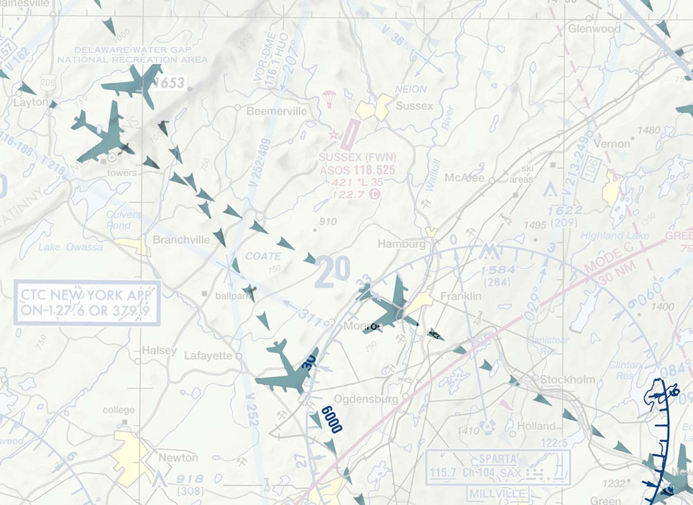
VFR transition routes are commonly used by ATC to move traffic through busy airspace. You need an ATC clearance to fly a VFR transition route.
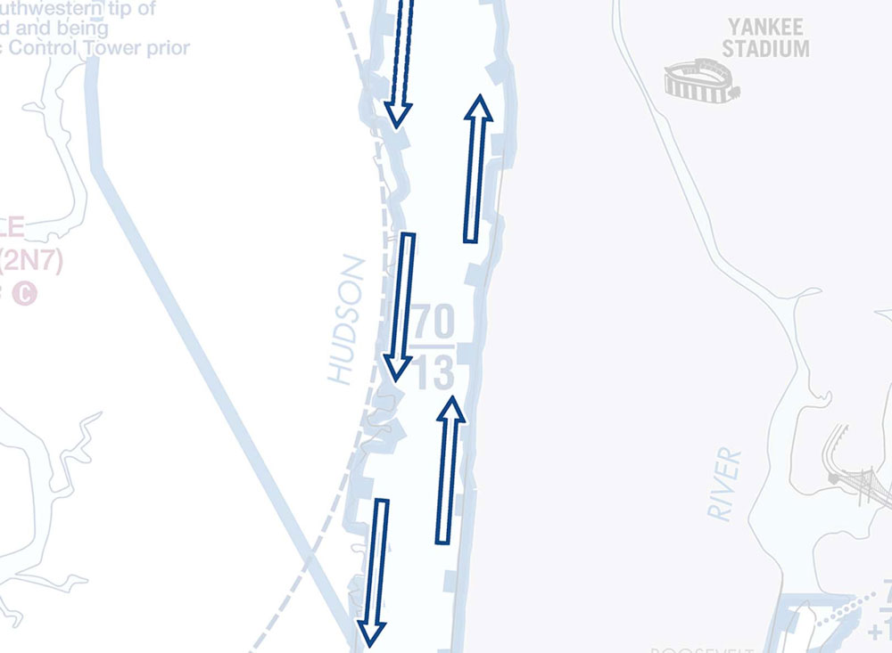
VFR flyways have a thick blue border with arrows on either end, and altitudes marked. These are routes you can follow to avoid flying through Class B airspace. You don’t need an ATC clearance to fly a VFR flyway.
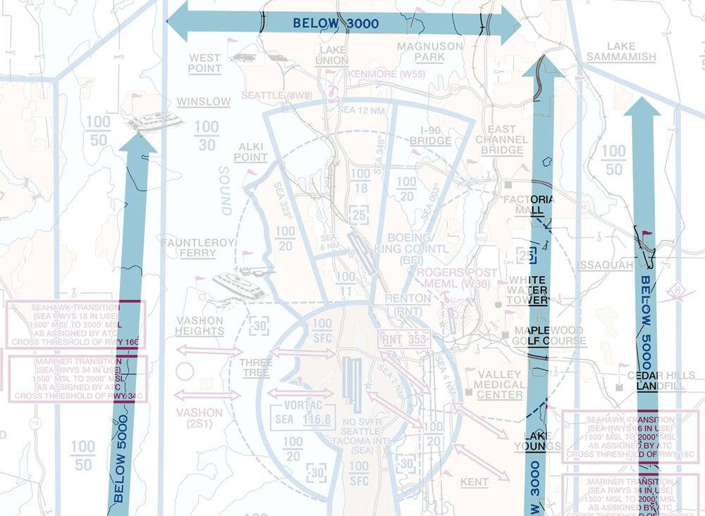
VFR radar services & flight following#
Flight following provides
Safety alerts
Traffic advisories
Limited radar vectoring
Sequencing at some locations
Flight following is different from your flight plan; requesting flight following does not open your flight plan, for which you need to contact a Flight Service Station (FSS).
You must still
Maintain VFR separation from other aircraft
Remain clear of clouds, remain in VFR conditions
Comply with FARs
Flight following is provided on a workload permitting basis. If ATC is too busy, they may not be able to provide flight following.
ATC would probably prefer to have you on frequency, as it’s one less aircraft they have to guess intentions for.
To request, consult the A/FD, chart supplement, or sectional chart for published Center or Departure/Approach control frequencies. Some airports may offer flight following through ground control before departure.
To request flight following, contact the appropriate ATC facility and provide:
Your aircraft identification
Your aircraft type
Your current location and altitude
Your destination
“Request flight following”
To end flight following, contact the appropriate ATC facility and:
“Cancel flight following”, or
“Cancel radar services”, or
“Cancel VFR flight following”
Special use airspace#
Based on CFI Notebook.
Prohibited airspace
Area within which flight of aircraft is prohibited.
Prohibited areas are established for security or other reasons associated with the national welfare.
These areas are regulatory in nature, and violating an area is grounds for interception and legal action.
These areas are depicted on aeronautical charts. Areas are charted as “P” followed by a designation number.
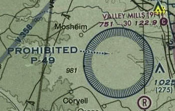
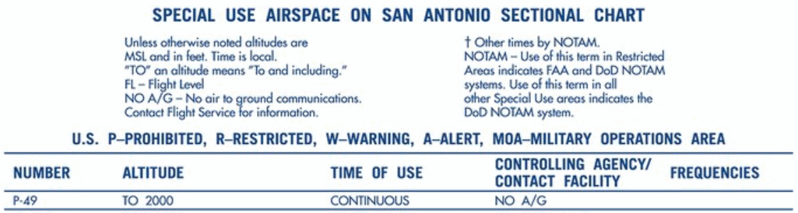
Restricted airspace
Area within which flight is not wholly prohibited, but subject to restrictions.
Restricted Areas are subject to restriction as they contain unusual, often invisible hazards to Aircraft, such as artillery firing, aerial gunnery, or flight of guided missiles
Penetration of restricted areas without authorization from the using or controlling agency may be extremely hazardous to the Aircraft and its occupants
Regulatory in nature
Depicted on charts, identified with an “R” followed by a number.
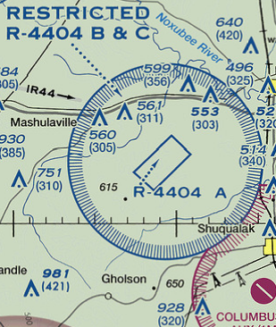
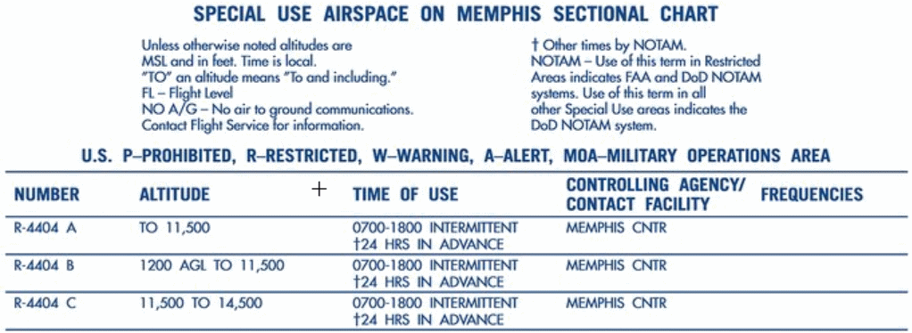
National security areas
National Security Areas (NSAs) are established at locations where there is a requirement for increase security and safety of ground facilities
Depicted inside a magenta dash, similar as a class echo Airspace extension to surface, but larger
Pilots are requested to voluntarily avoid flying through a depicted NSA
Regulated under Federal Aviation Regulations (FAR) Part 99
Flight inside NSAs may be temporarily prohibited by regulation under the provisions of FAR 99.7 when necessary
Regulatory prohibitions will be issued by System Operations Security and disseminated via NOTAM
Prohibitions will be issued by Notice to Air Missions (NOTAM), when required

Military operating areas
Military Operating Areas (MOAs) are blocks of Airspace that are established to separate certain military training activities from Instrument Flight Rule (IFR) traffic
Activities contained within MOAs include:
Air Combat Tactics
Air Intercepts
Aerobatics
Formation Training
Low Altitude Tactics (see also: Military Training Routes)
These areas are non-regulatory and do not require pilot participation.
Visual Flight Rules (VFR) traffic
Pilots operating under VFR should exercise extreme caution while flying within a MOA when military activity is being conducted
The pilot should contact the controlling agency when operating within 100 NM of the MOA to be crossed as the status (active/inactive) may change frequently
While flight through an active MOA is not prohibited to civilian traffic, it is a very bad idea due to dynamic operations in this airspace
Despite the safety hazard, it will cause military activity to “knock-it-off,” resulting in wasted time and gas
Instrument Flight Rules (IFR) traffic
Whenever an MOA is being used, non-participating IFR traffic may be cleared through an MOA if IFR separation can be provided by Air Traffic Control (ATC)
Otherwise, ATC will reroute or restrict non-participating IFR traffic
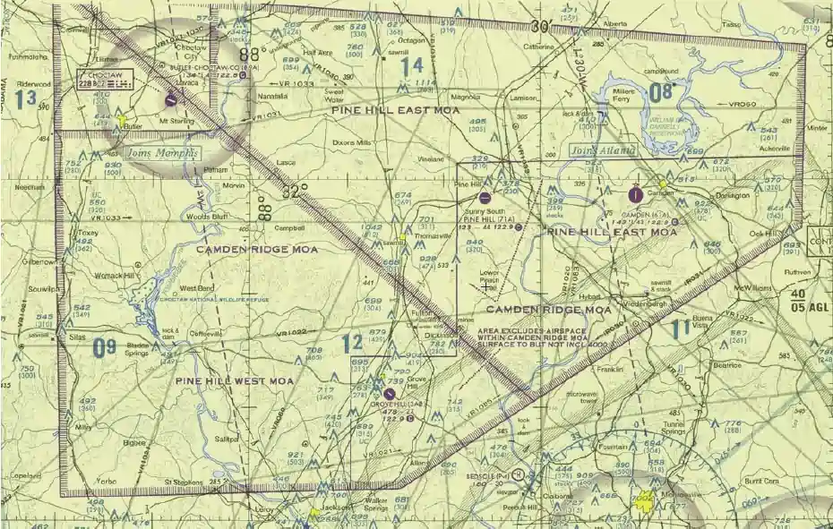

Controlled firing areas
Controlled Firing Areas (CFAs) contain activities which, if not conducted in a controlled environment, could be hazardous to non-participating aircraft (e.g. military artillery operations).
CFAs are not depicted on a map as they do not cause a non-participating Aircraft to change its flight path
When a spotter Aircraft, radar or ground personnel determine an Aircraft might be approaching the area, the activities are discontinued
Non-regulatory in nature
Alert areas
Alert areas are depicted on aeronautical charts to inform nonparticipating pilots of areas that may contain high volumes pilot training, parachute jumping, glider towing, or an unusual type of aerial activity.
Alert areas are non-regulatory in nature
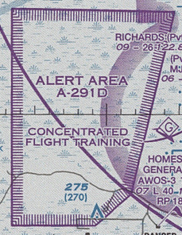
Warning area
Area extending from 3 NM and outward from the coast of the U.S., that contains activity that may be hazardous to nonparticipating aircraft.
Warning areas may be located over domestic or international waters or both
Vertical dimensions are not depicted on charts. For floors and ceilings you must reference the Special Use Airspace table on the edge of the aeronautical charts.
The U.S. Government does not have sole jurisdiction over the Airspace and is shared with the U.S. Navy
Warning areas may be considered for joint use if the area can be released to the FAA during periods when it is not required for its designated purpose, and provided the warning area is located in Airspace wherein the FAA exercises ATC authority under ICAO agreements
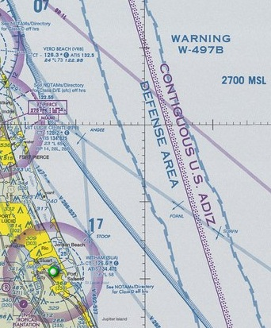
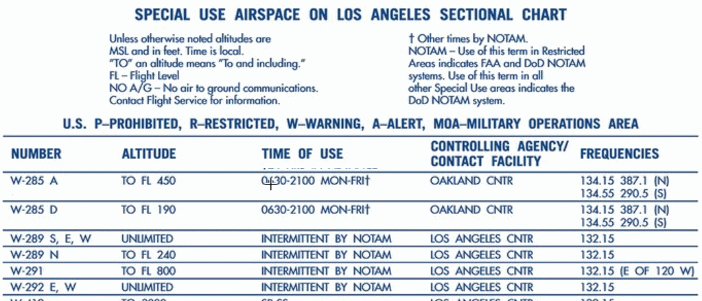